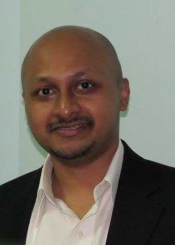

|
IEEE CASS Seasonal School on
AI-Driven Circuit, System, and EDA Tools
Shanghai, China, November 2019
A brief introduction. IEEE LPIRC (https://rebootingcomputing.ieee.org/lpirc).
Call for Participation
blablabla
Programs
| 11/25 Monday | 11/26 Tuesday | 11/27 Wednesday | ||||
|---|---|---|---|---|---|---|
| track1 | track2 | track1 | track2 | track1 | track2 | |
| timeslot1 | lesson1a | lesson3a | lesson5a | lesson7a | lesson9a | lesson11a |
| timeslot2 | break | break | break | break | break | break |
| timeslot3 | lesson1b | lesson3b | lesson5b | lesson7b | lesson9b | lesson11b |
| timeslot4 | lunch | lunch | lunch | lunch | lunch | lunch |
| timeslot5 | lesson2a | lesson4a | lesson6a | lesson8a | lesson10a | lesson12a |
| timeslot6 | break | break | break | break | break | break |
| timeslot7 | lesson2b | lesson4b | lesson6b | lesson8b | lesson10b | lesson12b |
Lecturers
|  Prof. Arindam Basu Nanyang Technological University Singapore | Course Title: Low-power Adaptive Neuromorphic Systems: Device, Circuits, Algorithms and Architectures Lecture Time: xxx Biography: Arindam Basu received the B.Tech. and the M.Tech. degrees in electronics and electrical communication engineering from IIT Kharagpur in 2005,and the MS degree in mathematics and the Ph.D. degree in electrical engineering from the Georgia Institute of Technology, Atlanta, in 2009 and 2010, respectively. He joined Nanyang Technological University, Singapore in 2010, where he currently holds a tenured Associate Professor position. His research interests include bio-inspired neuromorphic circuits, non-linear dynamics in neural systems, low-power analog IC design, and programmable circuits and devices. Dr. Basu received the Prime Minister of India Gold Medal in 2005 from IIT Kharagpur. He was a Distinguished Lecturer of the IEEE Circuits and Systems Society for the 2016–2017 term. He received the Best Student Paper Award from the Ultrasonics symposium in 2006, the best live demonstration at ISCAS 2010 and a finalist position in the best student paper contest at ISCAS 2008. He also received the MIT Technology Reviews inaugural TR35@Singapore Award in 2012 for being among the top 12 innovators under the age of 35 in Southeast Asia, Australia, and New Zealand. He has served as Guest Editor in several IEEE journals and is currently an Associate Editor of the IEEE Sensors Journal, the IEEE Transactions on Biomedical Circuits and Systems, and the Frontiers in Neuroscience. |
 Prof. Helen Li Duke University USA | Course Title: Brain Inspired Computing: The Extraordinary Voyages in Known and Unknown Worlds Lecture Time: xxx Biography: Dr. Hai "Helen" Li is Clare Boothe Luce Associate Professor with the Department of Electrical and Computer Engineering at Duke University. She received her B.S and M.S. from Tsinghua University and Ph.D. from Purdue University. At Duke, she co-directs Duke University Center for Computational Evolutionary Intelligence. Her research interests include machine learning acceleration and security, neuromorphic circuit and system for brain-inspired computing, conventional and emerging memory design and architecture, and software and hardware co-design. She received the NSF CAREER Award (2012), the DARPA Young Faculty Award (2013), TUM-IAS Hans Fisher Fellowship from Germany (2017), seven best paper awards and another eight best paper nominations. Dr. Li is a fellow of IEEE and a distinguished member of ACM. For more information, please see her webpage at http://cei.pratt.duke.edu/. |
Prof. Kejie Huang Zhejiang University China | Course Title: In Resistive Memory Computing for Neural Network Processors Lecture Time: xxx Biography: Kejie Huang received his B.Sc degree and M.Eng degree from the College of Information Science and Electronic Engineering, Zhejiang University, Hangzhou, China, in 2003 and 2006, respectively, and the Ph.D degree from the Department of Electrical Engineering, National University of Singapore, Singapore, in 2014. He was working in Samsung Semiconductor, GalaxyCore, Xilinx Singpaore, A*STAR and SUTD from 2006 to 2016. Since Oct 2016, he has been a Principal Investigator with the College of Information Science and Electronic Engineering, Zhejiang University. He has authored or co-authored more than 30 scientific papers in international peer-reviewed journals and conference proceedings. He holds four granted international patents and another ten patent applications. He is IEEE Senior Member and the reviewer of many international journals such as IEEE Access, TCAS, TVLSI, EDL. |
 Prof. Keshab K. Parhi University of Minnesota USA | Course Title: Brain Inspired Computing: Low-Energy Neuromorphic Computing Accelerator Architectures Lecture Time: xxx Biography: Keshab K. Parhi received the B.Tech. degree from the Indian Institute of Technology (IIT), Kharagpur, in 1982, the M.S.E.E. degree from the University of Pennsylvania, Philadelphia, in 1984, and the Ph.D. degree from the University of California, Berkeley, in 1988. He has been with the University of Minnesota, Minneapolis, since 1988, where he is currently Distinguished McKnight University Professor and Edgar F. Johnson Professor of Electronic Communication in the Department of Electrical and Computer Engineering. He has published 650 papers, is the inventor of 30 patents, and has authored the textbook VLSI Digital Signal Processing Systems (Wiley, 1999) and coedited the reference book Digital Signal Processing for Multimedia Systems (Marcel Dekker, 1999). His current research addresses VLSI architecture design of machine learning systems, hardware security, data-driven neuroscience and molecular/DNA computing. Dr. Parhi is the recipient of numerous awards including the 2003 IEEE Kiyo Tomiyasu Technical Field Award, the 2017 Mac Van Valkenburg award and the 2012 Charles A. Desoer Technical Achievement award from the IEEE Circuits and Systems Society, the 2004 F. E. Terman award from the American Society of Engineering Education, the 2001 IEEE W. R. G. Baker prize paper award, and a Golden Jubilee medal from the IEEE Circuits and Systems Society in 1999. He served as the Editor-in-Chief of the IEEE Trans. Circuits and Systems, Part-I during 2004 and 2005. He was elected a Fellow of IEEE in 1996 and a Fellow of the American Association for Advancement of Science (AAAS) in 2017. |
Prof. Jun Zhou University of Electronic Science and Technology of China China | Course Title: Brain Inspired Computing: Low Power Smart Sensor Node Processor Design Lecture Time: xxx Biography: Jun Zhou, Professor of National Thousand Youth Talents Scheme, Head of IoT Smart ICs & Systems Group, University of Electronic Science and Technology of China. His major research interests include algorithm & processor co-design for smart sensing applications and low power digital IC design. He has published more than 60 papers in prestigious conferences and journals including ISSCC, JSSC, DAC, TCAS-I, TVLSI, ESSCIRC and A-SSCC. His work has been reported by EE Times and has received the IEEE Circuits & Systems Society Seoul Chapter Award. He is currently an IEEE senior member, the Associate Editor of IEEE Transactions on Very Large Scale Integration System (TVLSI), the Chair of A-SSCC Digital Circuits & Systems Sub-Committee and the Chair of Embedded AI Committee of Sichuan Institute of Electronics. He is also OC/TPC member of a number of prestigious IEEE conferences including ICCD, ISCAS, SOCC and DSP. |
 Prof. Rui Yan Sichuan University China | Course Title: Neuromorphic Computing Approaches for Learning, Memory and Cognition Lecture Time: xxx Biography: Rui Yan received the B. Sc. and M. Sc. degrees from Department of Mathematics, Sichuan University, China in 1998 and 2001, respectively, and received the Ph. D. degree from Department of Electrical and Computer Engineering, National University of Singapore, Singapore in 2006. She was a postdoctoral research fellow in the University of Queensland, Australia, from 2006 to 2008, and a research scientist with the Institute for Infocomm Research, A*STAR from 2009 to 2014. Now she is a professor at Sichuan University, China. Her research interests include neuromorphic computing, robotic cognition, brain-inspired SLAM. |
Prof. Fengwei An Southern University of Science and Technology China | Course Title: Energy-efficient VLSI Design of Image Recognition and Machine Learning Algorithms for Automotive Applications Lecture Time: xxx Biography: FENGWEI AN received the Ph.D. from Hiroshima University, Japan in 2013. He worked with the Graduate School of Engineering, Hiroshima University as an Assistant Professor from 2013 and as an Associate Professor from 2017. Since April 2018, he works with Panasonic Semiconductor Solutions Co., Ltd for DSP design of CIS and Time-of-Flight Cameras. From March 2019, he is an Associate Professor with School of Microelectronics, Southern University of Science and Technology. His research interests include reconfigurable computing, ultra-low power digital circuits, and systems, and embedded system architecture for image recognition and machine learning algorithms. |
Registration
Click here to register
Contact Us
Email: xxx@sjtu.edu.cn
Address: XXX BLDG, 800 Dongchuan RD. Minhang District, Shanghai, China
Map: XXX
Organizing Committee:
Sponsors and Acknowledges
Sponsors Pictures
 |